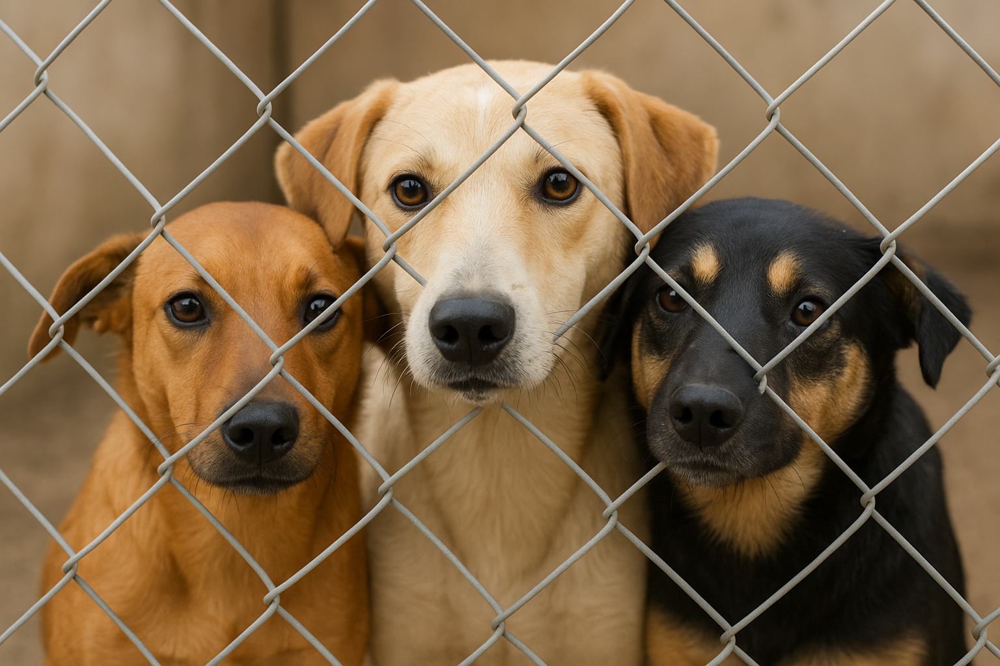
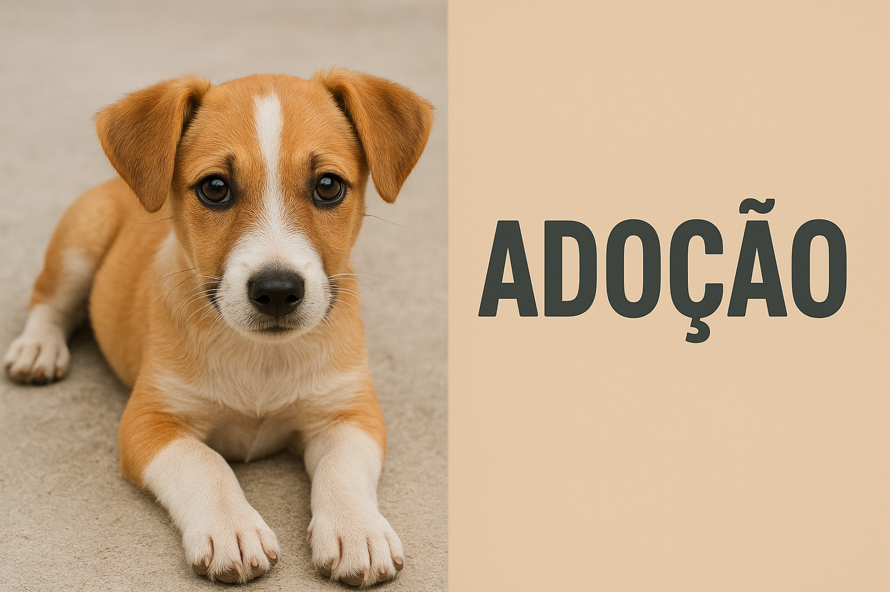
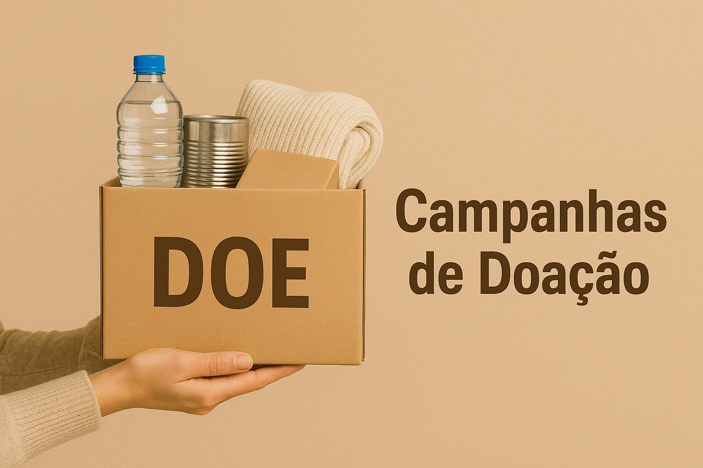
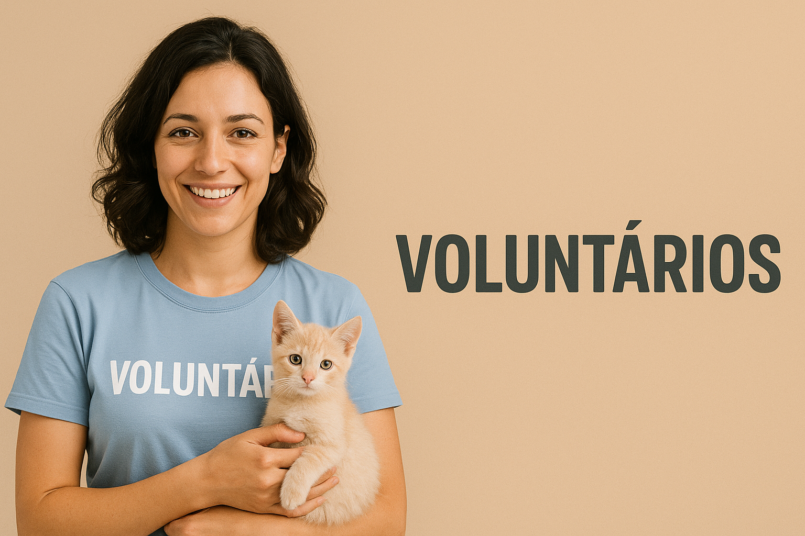

Sobre Nós
A Patas do Vale é uma ONG dedicada ao resgate, cuidado e adoção de animais abandonados no Alto Vale do Itajaí.
Nossas Ações

Adoção Responsável

Campanhas de Doação
Voluntários
Contamos com uma equipe de voluntários apaixonados por animais, que dedicam tempo e amor à causa.
